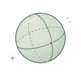

Riemann and Gauss meet Asimov
Geometric methods for robot learning, optimization, and control.
Noémie Jaquier
ICRA 2027Proposed workshop
Under construction





What can geometry do for robotics and BCIs?
Let's explore matrix geometry for robot motion, state estimation, and neural decoding. We'll share what works, what doesn't, and why.
We're getting things ready. We'll share the program here if the workshop is accepted.

The Chinese University of Hong Kong, Shenzhen
Nanyang Technological University
Sony Computer Science Laboratories
École Polytechnique
Microsoft
Mines Paris – PSL
KTH Royal Institute of Technology
A little geometry scrapbook. Events our team members helped organize, with links to explore.
Geometric methods for robot learning, optimization, and control.
Noémie Jaquier
A meeting of geometric methods, dynamical systems, and learning.
Cyrus Mostajeran · Frank Nielsen
Geometry and topology in robotics (2021); the geometry of motion (2026).
Noémie Jaquier
Information geometry across mathematics, statistics, and applications.
Frank Nielsen
With Silvère Bonnabel in 2013 & 2017
Exploring the mathematical ideas shared by physics and learning.
Silvère Bonnabel · Frank Nielsen
Matrix geometry for sensor and cognitive systems engineering.
Frank Nielsen
Bringing geometric tools into robot learning, optimization, and control.
Noémie Jaquier
Two invited sessions, plus a mini-course on group-affine systems and invariant filtering.
Sessions: Cyrus Mostajeran
Mini-course chairs: Silvère Bonnabel & Cyrus Mostajeran
Links open the conference program (PDF).